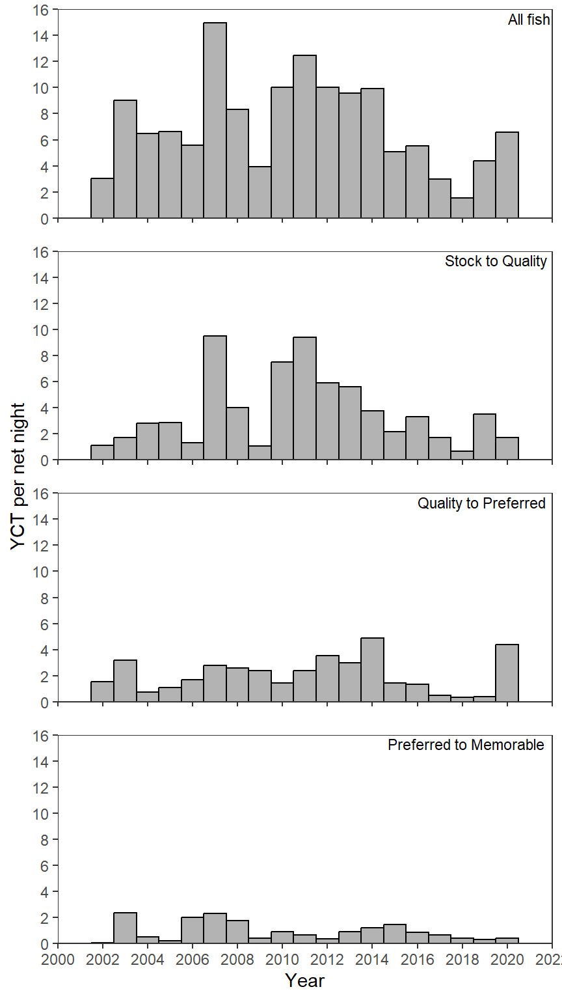
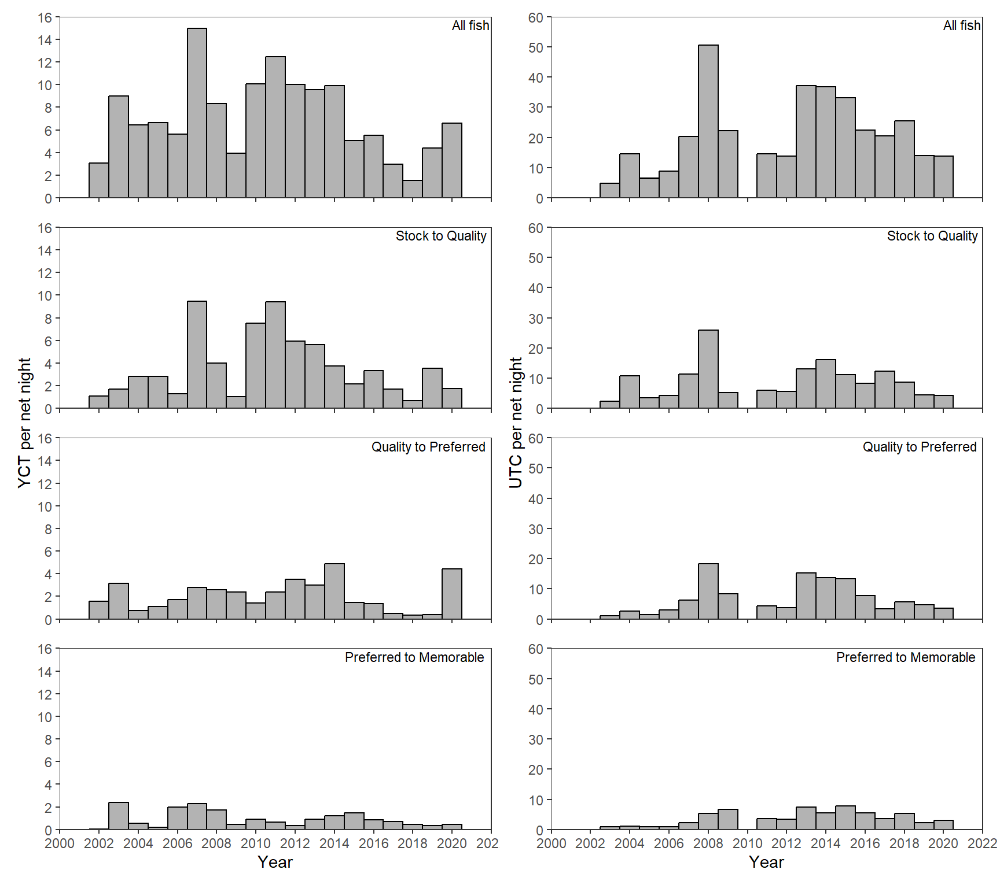
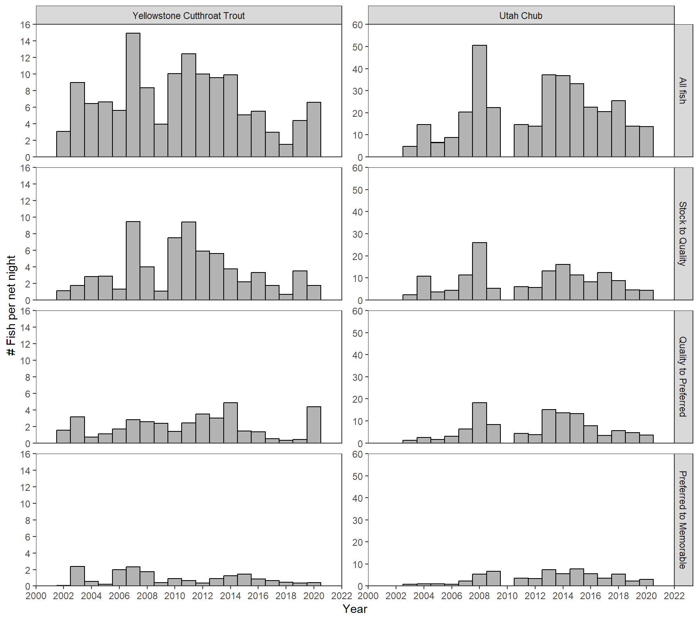

library(tidyverse) # for dplyr, ggplot2 packages
library(patchwork) # for arranging multiple plots
Series Note
This is the first of several posts related to McCarrick et al. (2022).
Introduction
McCarrick et al. (2022) examined the population dynamics of Yellowstone Cutthroat Trout (Oncorhynchus clarkii bouvieri) in Henrys Lake, Idaho over a nearly two decade period. Their Figure 2 shows the catch-per-unit-effort (CPE) of both Cutthroat Trout and Utah Chub (Gila atraria) by size categories across years. I use ggplot2 to recreate that figure here.
The following packages are loaded for use below. A few functions from each of lubridate, FSA, plyr, scales, gghrx, and lemon are used with :: such that the entire packages are not attached here.
Note
You will see below that I could recreate the structure but not the exact results of the author’s Figure 2. This may be due to issues present in the data provided with the publication that I discuss below, but it could also be that my data wrangling differs from theirs. I defer to the authors here as they are the experts with their day; I am just an interloper. I actually appreciate these data issues from an educational perspective as they provide rich opportunities to demonstrate a variety of techniques with “real” “messy” data.
Data Wrangling
Reading Excel File and Handling Dates
McCarrick et al. (2022) provided raw data for Figure 2 as an Excel file in their Data Supplement S1. Several “issues” were apparent on my first attempts to load these data.
- Missing data was recorded as missing cells, with “??”, and with “UNK”.
- There were oddly placed strings in some data fields (e.g., “Qty=”, “Qty =”, and “No Tag”). [I treated these as missing data below.]
- Dates were recorded as just year, full date with two-digit year, and full date with four-digit year. [More on this below.]
- Inconsistent “species” abbreviations. [More on this below.]
- Incorrect length and weight measurements (e.g., <10 mm, >2000 mm). [I treated these “as is” (i.e., without correction) for this post.]
The missing data and oddly named cells were handled with na= below. In addition, the column types were specifically defined in col_types=, primarily so that the first column would be largely correctly read as a date. The year was then extracted from the Date variable using year() from lubridate. However, the dates recorded in the original file as only a year were interpreted as an “Excel date code” rather than a date and, thus, the year was not extracted correctly. Fortunately, this “date” format was only used for one year (2002) such that the extracted year was consistently “1905.” Thus, the “1905” was replaced with “2002” for the extracted year with ifelse() as shown below. Several years did not exist (because the date was not recorded) and were removed with filter(). Finally, the variables were rearranged slightly, Species was changed to species for consistency with other variables, and the long effort variable was changed to the shorter netNights.1
1 Note that this code still produced a large number of warnings, all related to the “2002” “date”.
dat <- readxl::read_xlsx("download.xlsx",
na=c("","??","QTY =","QTY=","UNK","NO TAG"),
col_types=c("date","numeric","text",
"numeric","numeric","text")) |>
mutate(year=lubridate::year(Date),
year=ifelse(year==1905,2002,year)) |>
filter(!is.na(year)) |>
select(species=Species,year,length,weight,netNights=`number of net nights`)
FSA::headtail(dat)#R| species year length weight netNights
#R| 1 YCT 2002 150 NA 18
#R| 2 YCT 2002 160 NA 18
#R| 3 YCT 2002 160 NA 18
#R| 23971 YCT 2020 391 550 30
#R| 23972 YCT 2020 284 229 30
#R| 23973 YCT 2020 440 853 30New Effort Data Frame
The effort (i.e., netNights) variable seems out-of-place in the sense that each row of this data frame is a single fish. I suspected that this effort is actually for a year and was repeated for each fish captured in the same year. To examine my suspicion, I computed the minimum and maximum effort (and the difference between the two) for each year.
dat |>
group_by(year) |>
summarize(minF=min(netNights,na.rm=TRUE),
maxF=max(netNights,na.rm=TRUE),
diff=maxF-minF)#R| # A tibble: 19 × 4
#R| year minF maxF diff
#R| <dbl> <dbl> <dbl> <dbl>
#R| 1 2002 18 18 0
#R| 2 2003 18 18 0
#R| 3 2004 50 50 0
#R| 4 2005 46 46 0
#R| 5 2006 48 48 0
#R| 6 2007 44 44 0
#R| 7 2008 12 12 0
#R| 8 2009 23 23 0
#R| 9 2010 50 50 0
#R| 10 2011 30 30 0
#R| 11 2012 50 50 0
#R| 12 2013 50 50 0
#R| 13 2014 48 48 0
#R| 14 2015 50 50 0
#R| 15 2016 48 48 0
#R| 16 2017 50 50 0
#R| 17 2018 50 50 0
#R| 18 2019 50 50 0
#R| 19 2020 30 50 20The minimum and maximum efforts are the same for each, with the exception of 2020. I suspect that this is a typo. A quick table of efforts for 2020 shows that the vast majority are 30, rather than 50, net-nights. Further, my initial analysis with these data resulted in CPE values for 2020 that were lower than what was shown in McCarrick et al. (2022). Thus, I am going to assume that 30 net-nights of effort was used in 2020 (see how this is corrected below).
xtabs(~netNights,data=filter(dat,year==2020))#R| netNights
#R| 30 50
#R| 865 9For my purposes, I am going to create a new data frame of annual levels of effort by finding the minimum netNights in each year. The minimum is used here because it is the actual effort for all years that properly had a constant netNights entered and it is the assumed correct netNights for 2020 when a constant value was not entered.
eff <- dat |>
group_by(year) |>
summarize(netNights=min(netNights,na.rm=TRUE))
eff#R| # A tibble: 19 × 2
#R| year netNights
#R| <dbl> <dbl>
#R| 1 2002 18
#R| 2 2003 18
#R| 3 2004 50
#R| 4 2005 46
#R| 5 2006 48
#R| 6 2007 44
#R| 7 2008 12
#R| 8 2009 23
#R| 9 2010 50
#R| 10 2011 30
#R| 11 2012 50
#R| 12 2013 50
#R| 13 2014 48
#R| 14 2015 50
#R| 15 2016 48
#R| 16 2017 50
#R| 17 2018 50
#R| 18 2019 50
#R| 19 2020 30The netNights variables is no longer needed in the individual fish data frame.
dat <- dat |>
select(-netNights)Filtering to Two Species
Figure 2 in McCarrick et al. (2022) only displays results for Cutthroat Trout and Utah Chub. Thus, the data frame should be reduced to just these species. First, a look at how species are identified.
unique(dat$species)#R| [1] "YCT" "BKT" "HYB" "CHB" "RSS" "UTC" "KOK"
#R| [8] "BRT" "CHUB" NA "HB" "Yct" "NO FISH" "SCU"From the published paper it is apparent that “YCT” is for Yellowstone Cutthroat Trout and “UTC” is for Utah Chub. But note the “Yct” and the “CHB” and “CHUB”. A little closer look at just these abbreviations by year suggests that “Yct” is a “one-off” typo, but that “CHB” and “CHUB” appeared to be used in some years when “UTC” was mostly not used. This suggested to me that “CHB” and “CHUB” were likely synonyms for “UTC”.
xtabs(~year+species,data=filter(dat,species %in% c("YCT","Yct","UTC","CHB","CHUB")))#R| species
#R| year CHB CHUB UTC Yct YCT
#R| 2002 0 0 0 0 55
#R| 2003 84 0 2 0 162
#R| 2004 0 0 728 0 323
#R| 2005 0 0 294 0 305
#R| 2006 0 0 424 0 269
#R| 2007 0 0 895 0 658
#R| 2008 0 606 0 0 100
#R| 2009 0 0 512 0 91
#R| 2010 0 0 0 0 502
#R| 2011 0 440 0 0 374
#R| 2012 0 0 692 0 500
#R| 2013 0 0 1858 0 478
#R| 2014 0 0 1767 1 475
#R| 2015 0 0 1660 0 254
#R| 2016 0 0 1078 0 265
#R| 2017 0 0 1025 0 149
#R| 2018 0 0 1273 0 76
#R| 2019 0 0 696 0 219
#R| 2020 0 0 414 0 198Thus, species is modified below by combining “YCT” and “Yct” into “YCT”, and combining “UTC”, “CHB”, and “CHUB” into “UTC”.2 The data frame was subsequently reduced to just these two species.
2 And leaving all other species “names” as-is.
dat <- dat |>
mutate(species=case_when(
species %in% c("YCT","Yct") ~ "YCT",
species %in% c("UTC","CHB","CHUB") ~ "UTC",
TRUE ~ species
)
) |>
filter(species %in% c("YCT","UTC"))
# just checking
unique(dat$species)#R| [1] "YCT" "UTC"Adding Gabelhouse Length Categories
Figure 2 separates the data into panels based on Gabelhouse length categories (i.e., “Stock”, “Quality”, etc.). These categories can be efficiently added to the data frame using psdAdd() from FSA, but psdAdd() requires full species names rather than abbreviations. mapvalues() from plyr is used below to create a new variable with the full names derived from the abbreviations.
dat <- dat |>
mutate(species2=plyr::mapvalues(species,
from=c("YCT","UTC"),
to=c("Cutthroat Trout","Utah Chub")))
# just checking
xtabs(~species+species2,data=dat)#R| species2
#R| species Cutthroat Trout Utah Chub
#R| UTC 0 14448
#R| YCT 5454 0Now the length categories may be added using species2.
dat <- dat |>
mutate(gcat=FSA::psdAdd(len=length,species=species2))
FSA::headtail(dat)#R| species year length weight species2 gcat
#R| 1 YCT 2002 150 NA Cutthroat Trout substock
#R| 2 YCT 2002 160 NA Cutthroat Trout substock
#R| 3 YCT 2002 160 NA Cutthroat Trout substock
#R| 19900 YCT 2020 391 550 Cutthroat Trout quality
#R| 19901 YCT 2020 284 229 Cutthroat Trout stock
#R| 19902 YCT 2020 440 853 Cutthroat Trout qualityComputing CPE
From this, the data needs to be summarized to produce the CPE for each species for each year for each length category and for all fish regardless of length category. Development of this data frame will begin by counting the number of fish (i.e., rows) for each length category within each year within each species.
catch_gcat <- dat |>
group_by(species,year,gcat) |>
summarize(catch=n())
catch_gcat#R| # A tibble: 162 × 4
#R| # Groups: species, year [36]
#R| species year gcat catch
#R| <chr> <dbl> <fct> <int>
#R| 1 UTC 2003 substock 5
#R| 2 UTC 2003 stock 41
#R| 3 UTC 2003 quality 21
#R| 4 UTC 2003 preferred 15
#R| 5 UTC 2003 memorable 4
#R| 6 UTC 2004 substock 2
#R| 7 UTC 2004 stock 535
#R| 8 UTC 2004 quality 128
#R| 9 UTC 2004 preferred 52
#R| 10 UTC 2004 memorable 11
#R| # … with 152 more rowsNote in the previous output that catch_gcat is still “grouped” by year within species. Thus, catch can summed from this data frame to find the total catch per year for each species.3
3 Ungroup this data frame as we will not summarize it further.
catch_all <- catch_gcat |>
summarize(catch=sum(catch)) |>
ungroup()
catch_all#R| # A tibble: 36 × 3
#R| species year catch
#R| <chr> <dbl> <int>
#R| 1 UTC 2003 86
#R| 2 UTC 2004 728
#R| 3 UTC 2005 294
#R| 4 UTC 2006 424
#R| 5 UTC 2007 895
#R| 6 UTC 2008 606
#R| 7 UTC 2009 512
#R| 8 UTC 2011 440
#R| 9 UTC 2012 692
#R| 10 UTC 2013 1858
#R| # … with 26 more rowsAs Figure 2 displays all fish and fish by length category, these two data frames should be row-bound (i.e., stacked) together. Figure 2 does not have panels for “substock”, “memorable”, or “trophy” sized fish so fish in those length categories were removed from the resultant data frame. Finally, a new variable called type was created that has the names from gcat, or “All” if gcat was NA4.
4 gcat for “all fish” after bind_rows() was NA as gcat was not present in catch_all
cpe_dat <- bind_rows(catch_all,catch_gcat) |>
filter(!(gcat %in% c("substock","memorable","trophy"))) |>
mutate(type=ifelse(is.na(gcat),"All",as.character(gcat)))
FSA::headtail(cpe_dat)#R| species year catch gcat type
#R| 1 UTC 2003 86 <NA> All
#R| 2 UTC 2004 728 <NA> All
#R| 3 UTC 2005 294 <NA> All
#R| 143 YCT 2020 52 stock stock
#R| 144 YCT 2020 132 quality quality
#R| 145 YCT 2020 13 preferred preferredFinally, these data are left-join()ed (by year) with eff to add netNights, from which a new cpe variable is created. type was converted to a factor to match the vertical order of Figure 2, and the levels were given longer labels to match the labels in Figure 2. Finally, the variables were re-ordered (and gcat was dropped) for personal preference.
cpe_dat <- cpe_dat |>
left_join(eff,by="year") |>
mutate(cpe=catch/netNights,
type=factor(type,levels=c("All","stock","quality","preferred"),
labels=c("All fish","Stock to Quality",
"Quality to Preferred","Preferred to Memorable"))) |>
select(species,year,type,catch,netNights,cpe)
FSA::headtail(cpe_dat)#R| species year type catch netNights cpe
#R| 1 UTC 2003 All fish 86 18 4.7777778
#R| 2 UTC 2004 All fish 728 50 14.5600000
#R| 3 UTC 2005 All fish 294 46 6.3913043
#R| 143 YCT 2020 Stock to Quality 52 30 1.7333333
#R| 144 YCT 2020 Quality to Preferred 132 30 4.4000000
#R| 145 YCT 2020 Preferred to Memorable 13 30 0.4333333This data frame, now called cpe_dat, is now ready for recreating Figure 2.
Quick Summaries of CPE
Before recreating Figure 2, I summarized the CPE data by species and year for comparison to results in McCarrick et al. (2022).
cpe_dat |>
filter(type=="All fish") |>
group_by(species) |>
summarize(n=n(),
ttlcatch=sum(catch),
mncpe=mean(cpe),
sdcpe=sd(cpe),
mincpe=min(cpe),
minyr=year[cpe==mincpe],
maxcpe=max(cpe),
maxyr=year[cpe==maxcpe])#R| # A tibble: 2 × 9
#R| species n ttlcatch mncpe sdcpe mincpe minyr maxcpe maxyr
#R| <chr> <int> <int> <dbl> <dbl> <dbl> <dbl> <dbl> <dbl>
#R| 1 UTC 18 14459 20.0 12.9 0.239 2005 50.5 2008
#R| 2 YCT 19 5454 7.16 3.48 1.52 2018 15.0 2007In the first paragraph of the results, McCarrick et al. (2022) found the overall mean (and SD) CPE was 7.4 (3.6) for YCT and 19.9 (13.0) for UTC, which is close to what I obtained for UTC but not for YTC. In addition, they found a peak CPE of 15.4 for YCT in 2007 and 50.5 for UTC in 2008, again very close to my results for UTC but not that close for YCT. Finally, in the label for Figure 2 they reported 5,524 YCT were captured, whereas my results only show 5,454.
Recreating Figure 2
My general strategy for recreating Figure 2 was to create the left and right panels of subplots separately and then combine them using patchwork. Each side can be constructed via faceting on type, but I will use facet_rep_wrap() from lemon so as to have the x-axis tick marks on each panel.5 Each panel will be create with geom_col() using width=1 so that the bars touch and geom_text() to place the labels.6 The x- and y-axes were modified as is commonly done.7 Finally, I used theme_bw() as a base, removed the gridlines and removed the facet labels and background.8 As you examine the code below, make sure to realize that the data was filtered to just “YCT”.
YCT <- ggplot(data=filter(cpe_dat,species=="YCT"),
mapping=aes(x=year,y=cpe)) +
geom_col(color="black",fill="gray70",width=1) +
geom_text(mapping=aes(label=type),x=Inf,y=Inf,vjust=1.25,hjust=1.05,
check_overlap=TRUE,size=3) +
scale_y_continuous(name="YCT per net night",
limits=c(0,16),breaks=scales::breaks_width(2),
expand=expansion(mult=0)) +
scale_x_continuous(name="Year",
limits=c(2000,2022),breaks=scales::breaks_width(2),
expand=expansion(mult=0)) +
lemon::facet_rep_wrap(vars(type),ncol=1) +
theme_bw() +
theme(panel.grid=element_blank(),
strip.background=element_blank(),
strip.text=element_blank())
YCT
The code above was largely repeated but with data filtered to just “UTC” and adjusting the y-axis accordingly. The plot is not shown here but is the right side in the plot further below.
UTC <- ggplot(data=filter(cpe_dat,species=="UTC"),mapping=aes(x=year,y=cpe)) +
geom_col(color="black",fill="gray70",width=1) +
geom_text(mapping=aes(label=type),x=Inf,y=Inf,vjust=1.25,hjust=1.05,
check_overlap=TRUE,size=3) +
scale_y_continuous(name="UTC per net night",
limits=c(0,60),breaks=scales::breaks_width(10),
expand=expansion(mult=0)) +
scale_x_continuous(name="Year",
limits=c(2000,2022),breaks=scales::breaks_width(2),
expand=expansion(mult=0)) +
lemon::facet_rep_wrap(vars(type),ncol=1) +
theme_bw() +
theme(panel.grid=element_blank(),
strip.background=element_blank(),
strip.text=element_blank())The two subplots are then placed side-by-side.
YCT + UTC
Further Thoughts
I wanted to see if I could make a similar looking plot using facet_grid(). It turns out to be a bit of a challenge because each panel on the left- and right-sides has the same y-axis, but those axes differ between the two sides. I found a way around this.
First, I changed species to a factor with “YCT” in the first position so it would be plotted on the left (i.e., first). I also gave the levels longer labels so that the facets would have useful labels.
cpe_dat <- cpe_dat |>
mutate(species=factor(species,levels=c("YCT","UTC"),
labels=c("Yellowstone Cutthroat Trout","Utah Chub")))The y-axis needs to be defined for each facet. However, these definitions should be constant within species. Thus, I define limits and breaks for both YCT and UTC and saved them as objects. In addition, to save typing, I also defined the expansion factor as an object.
YCT_lmts <- c(0,16)
YCT_brks <- scales::breaks_width(2)
UTC_lmts <- c(0,60)
UTC_brks <- scales::breaks_width(10)
yexp <- expansion(mult=0)The basic plot uses the same ggplot() (except the data is not filtered), geom_col(), scale_x_continous(), and theme_bw() as before. The geom_text() has been eliminated because the “type” labels are going to be in the facet labels rather than “on the plot.” The part of theme() that removed the facet labels has been eliminated as facet labels are needed here. The spacing between panels was increased in theme() here. facet_rep_wrap() was replaced with facet_grid2() from ggh4x, where the rows are defined by type, the columns are defined by species, the y-axes are “free” and “independent” from facet to facet.9 Finally, facetted_pos_scales() from ggh4x is used to apply a different scale_y_continous() to each panel.10
9 The independent="y" part is the main thing that facet_grid2() adds over facet_grid() from ggplot2.
10 facetted_pos_scales() is described in more detail in this post.
ggplot(data=cpe_dat,mapping=aes(x=year,y=cpe)) +
geom_col(color="black",fill="gray70",width=1) +
scale_x_continuous(name="Year",
limits=c(2000,2022),breaks=scales::breaks_width(2),
expand=expansion(mult=0)) +
ggh4x::facet_grid2(rows=vars(type),cols=vars(species),
scales="free_y",independent="y") +
theme_bw() +
theme(panel.grid=element_blank(),
panel.spacing=unit(10,units="pt")) +
ggh4x::facetted_pos_scales(
y=list(
scale_y_continuous(name="# Fish per net night",
limits=YCT_lmts,breaks=YCT_brks,expand=yexp),
scale_y_continuous(limits=UTC_lmts,breaks=UTC_brks,expand=yexp),
scale_y_continuous(limits=YCT_lmts,breaks=YCT_brks,expand=yexp),
scale_y_continuous(limits=UTC_lmts,breaks=UTC_brks,expand=yexp),
scale_y_continuous(limits=YCT_lmts,breaks=YCT_brks,expand=yexp),
scale_y_continuous(limits=UTC_lmts,breaks=UTC_brks,expand=yexp),
scale_y_continuous(limits=YCT_lmts,breaks=YCT_brks,expand=yexp),
scale_y_continuous(limits=UTC_lmts,breaks=UTC_brks,expand=yexp)
)
)
References
McCarrick, D. K., J. C. Dillon, B. High, and M. C. Quist. 2022. Population dynamics of Yellowstone Cutthroat Trout in Henrys Lake, Idaho. Journal of Fish and Wildlife Management 13(1):169–181.
Reuse
Citation
BibTeX citation:
@online{h.ogle2023,
author = {Derek H. Ogle},
title = {McCarrick Et Al. (2022) {CPE} {Plot}},
date = {2023-03-22},
url = {https://fishr-core-team.github.io/fishR//blog/posts/2023-3-22_McCarricketal2022_Fig2},
langid = {en}
}
For attribution, please cite this work as:
Derek H. Ogle. 2023, March 22. McCarrick et al. (2022) CPE Plot. https://fishr-core-team.github.io/fishR//blog/posts/2023-3-22_McCarricketal2022_Fig2.